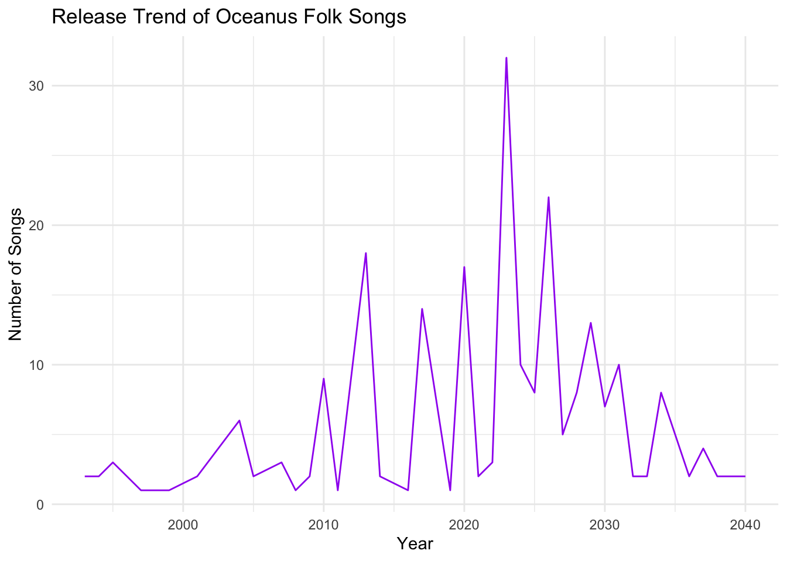

Show the code
pacman::p_load(tidyverse, jsonlite, SmartEDA, tidygraph, ggraph, plotly, treemapify, visNetwork, RColorBrewer, DT, ggthemes)In this take-home exercise, we are required to select one of the module of our proposed Shiny application and complete the following tasks:
This project seeks to design and develop insightful visualizations and analytic tools that allow users (like Silas) to explore the musical influence network centered on Sailor Shift. Specifically, we aim to:
Map Musical Influence: Visualize how Sailor Shift has been influenced by others and, in turn, how she has directly or indirectly influenced artists and genres.
Analyze Collaborations: Identify key collaborators throughout Sailor’s career, both from her early band (Ivy Echoes) and her solo years, and analyze the genres and roles of those collaborators.
Track Genre Evolution: Understand how Oceanus Folk evolved and interacted with genres like Indie Folk, Indie Pop, and Darkwave through stylized performances, lyrical themes, and musical structure.
Visualize Career Milestones: Highlight key turning points in Sailor’s career, including viral hits, genre shifts, and breakout collaborations using timeline and network-based views.
Compare Artists’ Careers: Contrast the musical journeys of Sailor’s former bandmates or contemporaries, and assess what defines a rising star in Oceanus Folk.
Predict Emerging Stars: Use influence and collaboration patterns to forecast the next potential breakout artists in the Oceanus Folk scene.
The dataset for VAST Challenge 2025 MC1 is a synthetic, directed multigraph comprising over 17,000 nodes and nearly 38,000 edges. It models relationships in the music industry, including people, songs, albums, musical groups, and record labels. Edges represent connections such as performance, production, influence, and membership. The data integrates crowdsourced musical influence annotations with aggregate popularity metrics (e.g., chart appearances), providing a rich network for analyzing artistic influence, career progression, and genre evolution within a fictional yet realistic music ecosystem.
The following packages are the needed packages:
pacman::p_load(tidyverse, jsonlite, SmartEDA, tidygraph, ggraph, plotly, treemapify, visNetwork, RColorBrewer, DT, ggthemes)For the purpose of this exercise, MC1_graph.json file will be used. Before getting started, we should have the data set in the data sub-folder.
In the code chunk below, fromJSON() of jsonlite package is used to import MC1_graph.json file into R and save the output object
kg <- fromJSON("MC1_release/MC1_graph.json")Before performing any analysis or visualizations, the data extracted from MC1_graph.json must be structured and cleaned for usability. The JSON file contains a directed multigraph with two primary components: a list of nodes and a list of links. These must be parsed into two separate data frames (nodes_tbl and edges_tbl) and enriched with meaningful attributes to support downstream tasks such as filtering, grouping, and network visualization.
After loading the JSON file, we extract the node and edge lists:
nodes_tbl <- as_tibble(kg$nodes)
edges_tbl <- as_tibble(kg$links)
glimpse(nodes_tbl)Rows: 17,412
Columns: 10
$ `Node Type` <chr> "Song", "Person", "Person", "Person", "RecordLabel", "S…
$ name <chr> "Breaking These Chains", "Carlos Duffy", "Min Qin", "Xi…
$ single <lgl> TRUE, NA, NA, NA, NA, FALSE, NA, NA, NA, NA, TRUE, NA, …
$ release_date <chr> "2017", NA, NA, NA, NA, "2026", NA, NA, NA, NA, "2020",…
$ genre <chr> "Oceanus Folk", NA, NA, NA, NA, "Lo-Fi Electronica", NA…
$ notable <lgl> TRUE, NA, NA, NA, NA, TRUE, NA, NA, NA, NA, TRUE, NA, N…
$ id <int> 0, 1, 2, 3, 4, 5, 6, 7, 8, 9, 10, 11, 12, 13, 14, 15, 1…
$ written_date <chr> NA, NA, NA, NA, NA, NA, NA, NA, NA, NA, "2020", NA, NA,…
$ stage_name <chr> NA, NA, NA, NA, NA, NA, NA, NA, NA, NA, NA, NA, NA, NA,…
$ notoriety_date <chr> NA, NA, NA, NA, NA, NA, NA, NA, NA, NA, NA, NA, NA, NA,…glimpse(edges_tbl)Rows: 37,857
Columns: 4
$ `Edge Type` <chr> "InterpolatesFrom", "RecordedBy", "PerformerOf", "Composer…
$ source <int> 0, 0, 1, 1, 2, 2, 3, 5, 5, 5, 5, 5, 5, 5, 5, 5, 5, 5, 5, 5…
$ target <int> 1841, 4, 0, 16180, 0, 16180, 0, 5088, 14332, 11677, 2479, …
$ key <int> 0, 0, 0, 0, 0, 0, 0, 0, 0, 0, 0, 0, 0, 0, 0, 0, 0, 0, 0, 0…Since tidygraph relies on row numbers (not raw IDs) for defining connections between nodes, we generate a mapping from each node’s unique id to its corresponding row index:
id_map <- tibble(id = nodes_tbl$id,
index = seq_len(nrow(nodes_tbl)))We then update the edges_tbl by replacing the source and target IDs with the corresponding row indices (from, to) using two left_join() operations:
edges_tbl <- edges_tbl %>%
left_join(id_map, by = c("source" = "id")) %>%
rename(from = index) %>%
left_join(id_map, by = c("target" = "id")) %>%
rename(to = index)This step aligns the edge table with the row-based referencing system used by tidygraph.
Some edges might refer to nodes that don’t exist (e.g., due to missing or inconsistent IDs). These would result in NA values in the from or to columns. We filter out such cases to ensure the integrity of the graph:
edges_tbl <- edges_tbl %>%
filter(!is.na(from), !is.na(to))In this assignment, since we need to analyze the relationship between Oceanus Folk and Salior Shift, we prepared the data subset here.
Oceanus Folk songs:
of_songs <- nodes_tbl %>%
filter(`Node Type` == "Song", genre == "Oceanus Folk")Sailor Shift songs:
# Get Sailor Shift's person id
sailor_shift_id <- nodes_tbl %>%
filter(`Node Type` == "Person", name == "Sailor Shift") %>%
pull(id)
# Get All Songs Performed by Sailor Shift
ss_song_ids <- edges_tbl %>%
filter(`Edge Type` == "PerformerOf", source == sailor_shift_id) %>%
pull(target)
# Get Song Details
sailor_shift_songs <- nodes_tbl %>%
filter(id %in% ss_song_ids, `Node Type` == "Song")To illustrate how the influence of Oceanus Folk has spread through the musical world, we need to define “influence” first.
A song is influenced by Oceanus Folk if:
The source is an Oceanus Folk song
The edge type is one of the below
The target is any other node (usually a song or album)
Based on these points, we can get the influence-type edges by the following code chunk:
influence_types <- c("InStyleOf", "CoverOf", "LyricalReferenceTo", "InterpolatesFrom", "DirectlySamples")
influence_edges <- edges_tbl %>%
filter(`Edge Type` %in% influence_types)Songs or albums influenced by Oceanus Folk:
# Get IDs of Oceanus Folk songs
of_song_ids <- of_songs$id
# Filter edges where Oceanus Folk is the influencer (source)
outward_influences <- influence_edges %>%
filter(source %in% of_song_ids)
# Get target nodes that were influenced by Oceanus Folk
outward_nodes <- nodes_tbl %>%
filter(id %in% outward_influences$target)We can now analyze outward_nodes to get genre distribution, timeline, etc.
Songs or albums that influenced Oceanus Folk:
# Get IDs of Oceanus Folk songs
of_song_ids <- of_songs$id
# Filter edges where Oceanus Folk songs are the influenced target
inward_influences <- influence_edges %>%
filter(target %in% of_song_ids)
# Get source nodes that influenced Oceanus Folk songs
inward_nodes <- nodes_tbl %>%
filter(id %in% inward_influences$source)To examine the data, the following code chunks are used to reveal the frequency distribution of Edge Type field of edges_tbl and the frequency distribution of Node Type field of nodes_tbl
To better understand the types of relationships captured in our influence network, we visualized the distribution of edge types—which represent different kinds of connections between musical entities such as songs, artists, genres, and albums.
ggplot(data = edges_tbl,
aes(y=`Edge Type`))+
geom_bar()
To gain a deeper understanding of the network structure, we examined the composition of node types within the influence network. Each node represents a distinct entity—such as an artist, song, album, or genre—and its type defines its role in the broader network.
ggplot(data = nodes_tbl,
aes(y=`Node Type`))+
geom_bar()
To explore the musical diversity within the network, we analyzed the genre distribution of songs. This reveals which musical styles are most represented among the works connected to or influenced by Oceanus Folk.
nodes_tbl %>%
filter(`Node Type` == "Song") %>%
count(genre, sort = TRUE) %>%
ggplot(aes(x = reorder(genre, n), y = n)) +
geom_bar(stat = "identity", fill = "tomato") +
coord_flip() +
labs(title = "Count of Songs in each Genre", x = "Genre", y = "Count") +
theme_minimal()
To understand the evolution of Oceanus Folk over time, we examined the release trend of songs classified under this genre. This analysis provides insight into when Oceanus Folk was most actively produced and possibly most influential.
of_songs %>%
filter(!is.na(release_date)) %>%
count(release_date) %>%
ggplot(aes(x = as.integer(release_date), y = n)) +
geom_line(color = "purple") +
labs(title = "Release Trend of Oceanus Folk Songs", x = "Year", y = "Number of Songs") +
theme_minimal()
To assess the reach and stylistic impact of Oceanus Folk, we analyzed the genres of songs that have been influenced by it. This allows us to understand how Oceanus Folk has contributed to shaping other musical styles across the network.
outward_nodes %>%
count(genre, sort = TRUE) %>%
ggplot(aes(x = reorder(genre, n), y = n)) +
geom_bar(stat = "identity", fill = "skyblue") +
coord_flip() +
labs(title = "Top 10 Genres Influenced by Oceanus Folk", x = "Genre", y = "Count") +
theme_minimal()For the below code chunk, the line chart is used as the visualization, to see the influence trend based on the year. From the result, we can see the influence trend is not always rising.
The visualization shows that Oceanus Folk had minimal influence before the year 2000, with only sporadic instances of influenced songs. However, starting in the mid-2000s, there is a noticeable increase in influence, peaking dramatically around 2010 with more than 80 influenced songs in a single year. A second but smaller spike appears around 2017. Following that, the influence seems to decline gradually, with some fluctuations, suggesting that the genre’s impact, while still present, has become more subdued in last years.
# Step 1: Get influenced songs from Oceanus Folk
influence_over_time <- influence_edges %>%
filter(source %in% of_songs$id) %>%
left_join(nodes_tbl, by = c("target" = "id")) %>%
filter(`Node Type` == "Song", !is.na(release_date)) %>%
mutate(release_year = as.integer(release_date)) %>%
count(release_year, name = "influenced_count")
# Step 2: Create interactive time series plot
plot_ly(influence_over_time,
x = ~release_year,
y = ~influenced_count,
type = 'scatter',
mode = 'lines+markers',
line = list(color = 'steelblue'),
marker = list(size = 6, color = 'black'),
text = ~paste("Year:", release_year, "<br>Influenced Songs:", influenced_count),
hoverinfo = 'text') %>%
layout(title = "Spread of Oceanus Folk Influence Over Time",
xaxis = list(title = "Release Year of Influenced Songs"),
yaxis = list(title = "Number of Influenced Songs"),
hoverlabel = list(bgcolor = "white"))To further explore the diffusion of Oceanus Folk influence across time and genre, we visualize a heatmap where each cell corresponds to the number of influenced songs in a specific genre and year. The darker the shade, the stronger the influence. This approach highlights not just volume but also temporal patterns in genre-specific influence.
# Prepare tooltip text
influence_heatmap <- influence_edges %>%
filter(source %in% of_songs$id) %>%
left_join(nodes_tbl, by = c("target" = "id")) %>%
filter(!is.na(release_date), !is.na(genre)) %>%
count(release_date, genre) %>%
mutate(release_year = as.character(release_date), # Treat as categorical
tooltip = paste("<b>", release_year, "</b>",
"\nGenre : ", genre,
"\nInfluenced Songs : ", n))
# Heatmap plot using ggplot and theme_tufte
heat <- ggplot(influence_heatmap, aes(x = release_year, y = genre, fill = n)) +
geom_tile(color = "white", size = 1, aes(text = tooltip)) +
theme_tufte(base_family = "Helvetica") +
coord_equal() +
scale_fill_gradient(name = "Influenced Songs", low = "#fff2f4", high = "coral") +
labs(x = "Release Year",
y = "Genre",
title = "Oceanus Folk Influence by Genre and Year",
caption = "Data Source: VAST Challenge 2025 MC1") +
theme(axis.ticks = element_blank(),
axis.text.x = element_text(size = 8, angle = 90, hjust = 1),
axis.text.y = element_text(size = 8),
plot.title = element_text(hjust = 0.5, face = "bold"),
legend.title = element_text(size = 9),
legend.text = element_text(size = 7),
legend.position = "top")
# Convert to interactive plot
ggplotly(heat, tooltip = "text")Following the line chart and heatmap analyses that explored the temporal spread and genre-level impact of Oceanus Folk, this section dives deeper into the individuals and genres most significantly influenced by this musical style. Using descriptive statistics, visualizations, and interactive networks, we unpack which artists and genres were most affected by Oceanus Folk’s reach.
To explore the downstream impact of Oceanus Folk, we compiled detailed information about songs that were influenced by the genre and the artists who performed them. This allows us to understand the breadth of influence across both individual creators and musical styles.
The process involved several steps:
Step 1: Identifying songs directly influenced by Oceanus Folk, based on network edge relationships.
Step 2: Extracting the performing artists linked to those songs through "PerformerOf" edges.
Step 3: Merging song metadata (e.g., genre, release year, notable status) with artist information.
Step 4: Displaying the results in an interactive data table for further exploration.
# Step 1: Get songs influenced by Oceanus Folk
of_influenced_songs <- influence_edges %>%
filter(source %in% of_songs$id) %>%
left_join(nodes_tbl, by = c("target" = "id")) %>%
filter(`Node Type` == "Song") %>%
rename(song_id = target,
song_name = name)
# Step 2: Get performing artist IDs and names
performers <- edges_tbl %>%
filter(`Edge Type` == "PerformerOf", target %in% of_influenced_songs$song_id) %>%
rename(song_id = target, artist_id = source) %>%
left_join(nodes_tbl, by = c("artist_id" = "id")) %>%
select(song_id, artist_id, artist_name = name)
# Step 3: Combine song info and artist info
influenced_song_details <- of_influenced_songs %>%
left_join(performers, by = "song_id") %>%
select(song_id,
song_name,
artist_id,
artist_name,
genre,
release_date,
notoriety_date,
notable,
single)
# Step 4: Show interactive data table
DT::datatable(
influenced_song_details,
options = list(
pageLength = 10,
autoWidth = TRUE,
scrollX = TRUE
),
rownames = FALSE,
caption = htmltools::tags$caption(
style = "caption-side: top; text-align: left;",
"Table: Songs influenced by Oceanus Folk and their performing artists"
)
)This bar chart highlights the individual artists most influenced by the genre. Each bar represents an artist, with the length corresponding to the number of songs they performed that were influenced by Oceanus Folk. The chart reveals that five artists, Synaptic Stream, Stephen Meyer, Fixx’d, Chao Tan, and Alfred Thibault, are the most prominently influenced, each associated with three influenced songs. A substantial number of other artists follow closely, each contributing two influenced works.
# Step 1: Get songs influenced by Oceanus Folk
of_influenced_song_ids <- influence_edges %>%
filter(source %in% of_songs$id) %>%
pull(target)
# Step 2: Link to PerformerOf edges
top_artist_ids <- edges_tbl %>%
filter(`Edge Type` == "PerformerOf", target %in% of_influenced_song_ids) %>%
count(source, sort = TRUE) %>%
slice_max(n, n = 10)
# Step 3: Get artist names
top_artists <- top_artist_ids %>%
left_join(nodes_tbl, by = c("source" = "id"))
# Step 4: Plot with improved theme
ggplot(top_artists, aes(x = reorder(name, n), y = n)) +
geom_col(fill = "lightcoral") +
geom_text(aes(label = n), hjust = -0.2, size = 3, family = "Helvetica") +
coord_flip() +
labs(
title = "Top Artists Influenced by Oceanus Folk",
x = "Artist",
y = "Number of Influenced Songs"
) +
theme_tufte(base_family = "Helvetica") +
theme(
plot.title = element_text(hjust = 0.5, face = "bold"),
axis.text.x = element_text(size = 8),
axis.text.y = element_text(size = 8),
axis.title.x = element_text(size = 9),
axis.title.y = element_text(size = 9)
)Using a 1-hop ego network, we visualized how Oceanus Folk connects to other genres via influence relationships. In this graph, Oceanus Folk is at the center, with directed edges pointing to genres of influenced songs.
The size and color of each node correspond to influence strength, revealing that genres such as Dream Pop, Indie Folk, and Experimental Pop are among the top five most influenced. This diagram emphasizes Oceanus Folk’s cross-genre impact, showing how its core attributes permeated diverse musical styles.
# Step 1: Filter outward-influenced nodes to songs with known genre
outward_genre_edges <- outward_influences %>%
left_join(nodes_tbl, by = c("target" = "id")) %>%
filter(`Node Type` == "Song", !is.na(genre)) %>%
transmute(from = "Oceanus Folk", to = genre) # Oceanus Folk → genre
# Step 2: Count influence strength by genre
outward_genre_strength <- outward_genre_edges %>%
count(to, name = "influence_count")
# Step 3: Identify top 5 influenced genres and assign colors
top5_out_genres <- outward_genre_strength %>%
arrange(desc(influence_count)) %>%
slice(1:5) %>%
mutate(color = rev(RColorBrewer::brewer.pal(5, "Oranges")))
# Step 4: Build nodes for visNetwork
outward_genre_nodes <- unique(c(outward_genre_edges$from, outward_genre_edges$to)) %>%
tibble(id = .) %>%
left_join(outward_genre_strength, by = c("id" = "to")) %>%
left_join(top5_out_genres %>% select(id = to, top5_color = color), by = "id") %>%
mutate(
influence_count = replace_na(influence_count, 1),
label = id,
value = influence_count * 2,
color = case_when(
id == "Oceanus Folk" ~ "#4682B4", # Blue for Oceanus Folk
!is.na(top5_color) ~ top5_color, # Top 5 in Oranges palette
TRUE ~ "#FDD0A2" # Others in light orange
),
title = paste0("Genre: ", id, "<br>Influence Count: ", influence_count)
)
# Step 5: Render network
visNetwork(outward_genre_nodes, outward_genre_edges, height = "600px", width = "100%") %>%
visEdges(arrows = "to") %>%
visOptions(highlightNearest = TRUE) %>%
visLayout(randomSeed = 456) %>%
visPhysics(enabled = FALSE)A second ego network was constructed to map the influence from Oceanus Folk directly to artists. Each edge represents an artist who performed a song influenced by Oceanus Folk.
This visualization complements the earlier bar chart by offering a relational view of artistic influence, where artists are displayed as interconnected nodes rather than ranked bars. The network format allows us to visually identify clusters or outliers of influence, and the interactive layout facilitates deeper exploration of individual nodes.
# Step 1: Create central node for Oceanus Folk
oceanus_ego_center_node <- tibble(
id = "Oceanus Folk",
label = "Oceanus Folk",
group = "genre"
)
# Step 2: Create artist nodes only
artist_nodes <- influenced_song_details %>%
distinct(artist_name) %>%
filter(!is.na(artist_name)) %>%
mutate(id = paste0("artist_", row_number()),
label = artist_name,
group = "person")
# Step 3: Create edges: Oceanus Folk → Artists (one edge per unique artist)
edges_genre_to_artists <- artist_nodes %>%
transmute(from = "Oceanus Folk", to = id)
# Step 4: Combine nodes and edges
nodes_viz <- bind_rows(oceanus_ego_center_node, artist_nodes)
edges_viz <- edges_genre_to_artists
# Step 5: Plot network
visNetwork(nodes_viz, edges_viz, height = "700px", width = "100%") %>%
visOptions(highlightNearest = TRUE, nodesIdSelection = TRUE) %>%
visLayout(randomSeed = 123) %>%
visNodes(shape = "dot", size = 15) %>%
visGroups(groupname = "genre", color = "steelblue") %>%
visGroups(groupname = "person", color = "tomato") %>%
visLegend()While earlier sections analyzed how Oceanus Folk exerted influence on other artists and genres, this section flips the perspective: how has Oceanus Folk itself evolved over time—particularly with the rise of Sailor Shift?
We explore two key aspects:
What genres and artists influenced Oceanus Folk?
Did Sailor Shift have a direct or indirect impact on Oceanus Folk’s development?
Through descriptive statistics, influence networks, and comparative analysis, we reveal how Oceanus Folk became a convergence point for multiple musical styles in recent years.
This network visualization offers a perspective on how Oceanus Folk has been influenced by other musical genres, complementing earlier analyses of how Oceanus Folk spread its influence. Each node represents a genre, and the directed edges point toward Oceanus Folk, indicating that songs from these genres have influenced the development or characteristics of Oceanus Folk songs. The central red node denotes Oceanus Folk, while the surrounding blue nodes represent the genres that contributed influence.
Node size reflects the number of influence connections from a genre into Oceanus Folk, and color intensity highlights the top 5 most influential genres, with Desert Rock, Synthpop, and Dream Pop among the most significant. The presence of diverse genres, including Symphonic Metal, Doom Metal, Speed Metal, and Jazz Surf Rock, suggests that Oceanus Folk has drawn inspiration from a wide range of styles.
# Step 1: Filter inward-influencing nodes to songs with known genre
inward_genre_edges <- inward_influences %>%
left_join(nodes_tbl, by = c("source" = "id")) %>%
filter(`Node Type` == "Song", !is.na(genre)) %>%
transmute(from = genre, to = "Oceanus Folk") # genre → Oceanus Folk
# Step 2: Count influence strength by genre
inward_genre_strength <- inward_genre_edges %>%
count(from, name = "influence_count")
# Step 3: Identify top 5 genres and assign colors
top5_genres <- inward_genre_strength %>%
arrange(desc(influence_count)) %>%
slice(1:5) %>%
mutate(color = rev(brewer.pal(5, "Blues")))
# Step 4: Build nodes for visNetwork
inward_genre_nodes <- unique(c(inward_genre_edges$from, inward_genre_edges$to)) %>%
tibble(id = .) %>%
left_join(inward_genre_strength, by = c("id" = "from")) %>%
left_join(top5_genres %>% select(id = from, top5_color = color), by = "id") %>%
mutate(
influence_count = replace_na(influence_count, 1),
label = id,
value = influence_count * 2,
color = case_when(
id == "Oceanus Folk" ~ "#FF6347", # Red for Oceanus Folk
!is.na(top5_color) ~ top5_color, # Top 5 in Blues palette
TRUE ~ "#9ECAE1" # Others light blue
),
title = paste0("Genre: ", id, "<br>Influence Count: ", influence_count)
)
# Step 5: Render influence network
visNetwork(inward_genre_nodes, inward_genre_edges) %>%
visEdges(arrows = "to") %>%
visOptions(highlightNearest = TRUE) %>%
visLayout(randomSeed = 321) %>%
visPhysics(enabled = FALSE)To complement the genre-level analysis, we examined the specific works and artists that influenced Oceanus Folk songs.
This multi-layer network includes:
Songs and albums that directly influenced Oceanus Folk
Artists who performed these works
Directed edges showing influence paths from artist → work → Oceanus Folk
This visualization reveals the interpersonal and inter-work pathways through which Oceanus Folk absorbed new elements. It helps us identify key contributors, understand whether albums or singles had greater impact, and explore collaborative nodes that acted as influence bridges.
# Step 1: Filter influential works (songs & albums only)
influential_works <- inward_nodes %>%
filter(`Node Type` %in% c("Song", "Album")) %>%
mutate(work_label = name,
work_id = paste0("work_", row_number()),
group = ifelse(`Node Type` == "Song", "song", "album"))
# Step 2: Get performing artists for those works
influencing_artists <- edges_tbl %>%
filter(`Edge Type` == "PerformerOf", target %in% influential_works$id) %>%
rename(work_real_id = target, artist_real_id = source) %>%
left_join(nodes_tbl, by = c("artist_real_id" = "id")) %>%
filter(`Node Type` == "Person") %>%
distinct(artist_real_id, name) %>%
mutate(artist_label = name,
artist_id = paste0("artist_", row_number()),
group = "person")
# Step 3: Build node list
# Central node: Oceanus Folk
center_node <- tibble(
id = "Oceanus Folk",
label = "Oceanus Folk",
group = "center"
)
# Work nodes
work_nodes <- influential_works %>%
select(id = work_id, label = work_label, group)
# Artist nodes
artist_nodes <- influencing_artists %>%
select(id = artist_id, label = artist_label, group)
nodes_viz <- bind_rows(center_node, work_nodes, artist_nodes)
# Step 4: Create edges
# Works → Oceanus Folk
edges_to_of <- influential_works %>%
transmute(from = work_id, to = "Oceanus Folk")
# Artists → Works
edges_artist_to_work <- edges_tbl %>%
filter(`Edge Type` == "PerformerOf", target %in% influential_works$id) %>%
rename(work_real_id = target, artist_real_id = source) %>%
left_join(influential_works, by = c("work_real_id" = "id")) %>%
left_join(influencing_artists, by = c("artist_real_id")) %>%
transmute(from = artist_id, to = work_id) %>%
filter(!is.na(from), !is.na(to))
edges_viz <- bind_rows(edges_artist_to_work, edges_to_of)
# Step 5: Visualize
visNetwork(nodes_viz, edges_viz, height = "700px", width = "100%") %>%
visOptions(highlightNearest = TRUE, nodesIdSelection = TRUE) %>%
visLayout(randomSeed = 999) %>%
visNodes(shape = "dot", size = 15) %>%
visGroups(groupname = "center", color = "tomato") %>%
visGroups(groupname = "song", color = "lightblue") %>%
visGroups(groupname = "album", color = "khaki") %>%
visGroups(groupname = "person", color = "orchid") %>%
visLegend()To analyze how Sailor Shift influenced Oceanus Folk, we need to explore both:
Direct influence: Did any Sailor Shift songs directly influence Oceanus Folk songs?
Indirect influence Did Sailor Shift influence intermediary songs that later influenced Oceanus Folk?
We first identified works directly influenced by Sailor Shift’s songs, and the artists who performed them. While the analysis did not uncover many direct connections to Oceanus Folk songs, we visualized the network of Sailor Shift → influenced works → performing artists.
This clarified Sailor Shift’s general influence sphere—setting the stage for evaluating whether these intermediaries played a role in influencing Oceanus Folk downstream.
# Step 2: Get influence edges where Sailor Shift's songs are the source
ss_song_ids <- sailor_shift_songs$id
ss_outward_edges <- influence_edges %>%
filter(source %in% ss_song_ids)
# Step 3: Get the target works (songs or albums) influenced by Sailor Shift
influenced_works <- nodes_tbl %>%
filter(id %in% ss_outward_edges$target)
# Step 4: Get artists who performed these influenced works
influenced_artist_links <- edges_tbl %>%
filter(`Edge Type` == "PerformerOf", target %in% influenced_works$id) %>%
rename(work_id = target, artist_id = source) %>%
left_join(nodes_tbl, by = c("artist_id" = "id")) %>%
select(work_id, artist_id, artist_name = name)
# Step 5: Join with work metadata for descriptive view
influenced_by_sailor <- influenced_works %>%
left_join(influenced_artist_links, by = c("id" = "work_id")) %>%
select(work_id = id,
work_name = name,
work_type = `Node Type`,
artist_id,
artist_name,
genre,
release_date,
notable)
# Step 6: Show interactive data table
DT::datatable(
influenced_by_sailor,
options = list(
pageLength = 10,
autoWidth = TRUE,
scrollX = TRUE
),
rownames = FALSE,
caption = htmltools::tags$caption(
style = "caption-side: top; text-align: left;",
"Table: Songs influenced by Salior Shift and their performing artists"
)
)# Step 1: Create center node for Sailor Shift
ss_center_node <- tibble(
id = "Sailor Shift",
label = "Sailor Shift",
group = "center"
)
# Step 2: Create work nodes (distinguish between songs and albums using group)
work_nodes <- influenced_by_sailor %>%
distinct(work_name, work_type) %>%
mutate(id = paste0("work_", row_number()),
label = work_name,
group = ifelse(work_type == "Song", "song", "album"))
# Step 3: Create artist nodes
artist_nodes <- influenced_by_sailor %>%
distinct(artist_name) %>%
filter(!is.na(artist_name)) %>%
mutate(id = paste0("artist_", row_number()),
label = artist_name,
group = "person")
# Step 4: Create edges from Sailor Shift → Works
edges_ss_to_works <- work_nodes %>%
transmute(from = "Sailor Shift", to = id)
# Step 5: Create edges from Works → Artists
edges_work_to_artist <- influenced_by_sailor %>%
inner_join(work_nodes, by = c("work_name" = "label")) %>%
inner_join(artist_nodes, by = c("artist_name" = "label")) %>%
transmute(from = id.x, to = id.y)
# Step 6: Combine nodes and edges
nodes_viz <- bind_rows(ss_center_node, work_nodes, artist_nodes)
edges_viz <- bind_rows(edges_ss_to_works, edges_work_to_artist)
# Step 7: Visualize
visNetwork(nodes_viz, edges_viz, height = "700px", width = "100%") %>%
visOptions(highlightNearest = TRUE, nodesIdSelection = TRUE) %>%
visLayout(randomSeed = 888) %>%
visNodes(shape = "dot", size = 15) %>%
visGroups(groupname = "center", color = "steelblue") %>%
visGroups(groupname = "song", color = "lightgreen") %>%
visGroups(groupname = "album", color = "khaki") %>%
visGroups(groupname = "person", color = "tomato") %>%
visLegend()The following code chunk is to check if Sailor Shift has the indirect influence on Oceanus Folk. The return result is 2, which means there are two influence.
# Step 1: Get direct influence targets from Sailor Shift's songs
ss_to_others <- influence_edges %>%
filter(source %in% ss_song_ids) %>%
select(source_ss = source, intermediary = target)
# Step 2: Get targets that influenced Oceanus Folk songs
others_to_of <- influence_edges %>%
filter(source %in% ss_to_others$intermediary,
target %in% of_song_ids) %>%
select(intermediary = source, of_song = target)
# Step 3: Join the two to find indirect influence paths
indirect_path <- ss_to_others %>%
inner_join(others_to_of, by = "intermediary")
# Output the number of indirect influence paths
nrow(indirect_path)[1] 2This visualization illustrates an indirect influence path showing how Sailor Shift’s music may have shaped other works within the Oceanus Folk genre through an intermediary. Starting with “Saltwater Hymn”, a song performed by Sailor Shift and categorized under Oceanus Folk, the influence flows to “Parallel Memories”, a Dream Pop song by Tao Wen. This intermediary song then influences two other Oceanus Folk songs: “Grip and Grace” by Jun Xu and “Aquatic Rebirth (1983)” by Donald Medina.
Although Sailor Shift did not directly influence these two final songs, the network reveals a two-step chain of influence, suggesting that their artistic style or thematic elements may have propagated indirectly through another genre and artist.
# Step 1: Map PerformerOf edges to get artist names for songs
song_artists <- edges_tbl %>%
filter(`Edge Type` == "PerformerOf") %>%
select(song_id = target, artist_id = source) %>%
left_join(
nodes_tbl %>%
filter(`Node Type` == "Person") %>%
select(artist_id = id, artist_name = name),
by = "artist_id"
)
# Step 2: Prepare node list with genre and artist info
indirect_nodes <- nodes_tbl %>%
filter(id %in% unique(c(indirect_path$source_ss, indirect_path$intermediary, indirect_path$of_song))) %>%
left_join(song_artists, by = c("id" = "song_id")) %>%
mutate(
genre = ifelse(is.na(genre), "Unknown Genre", genre),
artist_name = ifelse(is.na(artist_name), "Unknown Artist", artist_name),
label = paste0(name, "\n", genre, " - ", artist_name),
title = paste0("Song: ", name, "<br>Genre: ", genre, "<br>Artist: ", artist_name)
) %>%
select(id, label, title) %>%
distinct(id, .keep_all = TRUE) # Ensure no duplicate node IDs
# Step 3: Create the combined_edges object
edges1 <- indirect_path %>%
select(from = source_ss, to = intermediary)
edges2 <- indirect_path %>%
select(from = intermediary, to = of_song)
combined_edges <- bind_rows(edges1, edges2)
# Step 4: Visualize the network
visNetwork(nodes = indirect_nodes, edges = combined_edges) %>%
visEdges(arrows = "to") %>%
visOptions(highlightNearest = TRUE) %>%
visLayout(randomSeed = 42) %>%
visPhysics(enabled = FALSE)After examining both the direct and indirect influence paths from Sailor Shift to specific Oceanus Folk songs, it becomes evident that Sailor Shift’s impact extended beyond individual songs to influence the broader stylistic evolution of the genre. To better understand this transformation on a macro level, we now compare the overall genre influences on Oceanus Folk before and after Sailor Shift’s emergence.
This visualization compares the genres that influenced Oceanus Folk songs before and after the emergence of Sailor Shift, revealing a clear shift in the genre’s stylistic development. Prior to Sailor Shift, Oceanus Folk was heavily influenced by itself, as shown by the dominant blue segment representing self-influence. The total number of influences was significantly higher in this period, indicating that Oceanus Folk initially evolved through internal reinforcement and continuity within its own style.
After Sailor Shift’s emergence, the number of influences decreased, but the diversity of contributing genres increased. The influence became more distributed across a broader range of genres such as Dream Pop, Doom Metal, Darkwave, and Synthpop. This suggests that while Oceanus Folk became less self-referential in the post-Sailor Shift era.
ss_song_ids <- edges_tbl %>%
filter(`Edge Type` == "PerformerOf", source == sailor_shift_id) %>%
pull(target)
ss_release_year <- nodes_tbl %>%
filter(id %in% ss_song_ids, !is.na(release_date)) %>%
summarise(min_year = min(as.integer(release_date))) %>%
pull(min_year)
influences_into_of <- edges_tbl %>%
filter(`Edge Type` %in% influence_types,
target %in% of_song_ids) %>%
left_join(nodes_tbl, by = c("source" = "id")) %>%
filter(`Node Type` == "Song", !is.na(genre), !is.na(release_date)) %>%
mutate(release_year = as.integer(release_date),
period = ifelse(release_year < ss_release_year, "Before SS", "After SS"))
influences_into_of %>%
count(period, genre) %>%
ggplot(aes(x = period, y = n, fill = genre)) +
geom_col(position = "stack") +
labs(title = "Genres Influencing Oceanus Folk\nBefore vs. After Sailor Shift",
x = "", y = "Number of Influences") +
theme_minimal()
Oceanus Folk, a genre rooted in emotive storytelling and maritime nostalgia, has not only evolved over time but has also left a visible mark on the broader musical ecosystem. This dashboard investigates both directions of influence: how Oceanus Folk inspired others, and how it was shaped by surrounding genres. Through temporal and network visualizations, users are invited to trace its reach and evolution.
The first section of the dashboard focuses on Oceanus Folk’s influence on others. A line graph tracks the number of influenced songs released over time, revealing a pronounced spike around 2010—signaling a cultural resurgence or a defining moment for the genre. The accompanying data table showcases detailed metadata of influenced works, including song title, artists, genre, and key markers such as whether the track became a single or notable release. This segment combines historical and relational insight, encouraging users to explore not just the trends but also the people behind them.

The second section flips the lens to investigate how other genres have shaped Oceanus Folk. A genre-to-genre influence network diagram places Oceanus Folk at the center of a web of arrows, connecting it with genres like Speed Metal, Dream Pop, and Americana. The visual suggests a diverse heritage and indicates stylistic blending that may have influenced Oceanus Folk’s evolution. Below that, a larger artist-work network diagram links songs and albums, distinguishing between types of musical output and highlighting central nodes with high connectivity. These visuals paint a picture of Oceanus Folk as both a cultural contributor and a genre in flux—constantly being reshaped by the music landscape around it.

Together, the two panels tell a comprehensive story of Oceanus Folk’s dual role in the music network:
As an influencer, Oceanus Folk peaked in cultural impact around 2010, with ripple effects continuing into the 2020s.
As an influenced genre, Oceanus Folk drew heavily from eclectic and contrasting genres, indicating its stylistic complexity and adaptive nature.
This dual-perspective analysis highlights Oceanus Folk’s dynamic presence—both as a creative source and a stylistic sponge—within the synthetic music ecosystem.